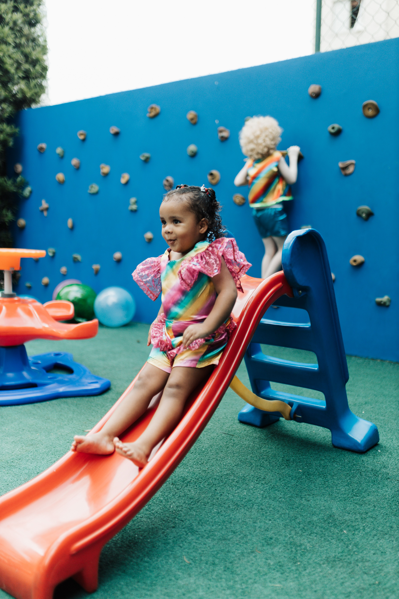

About A Re Ageng Social Services
A Re Ageng Social Services is a community-focused organisation based in South Africa.

The organisation aims to provide support, guidance and assistance to individuals, families and members of the community.
The purpose of this proposed website is to make information about the organisation easier for members of the community to access.
Our Mission
Our proposed mission is to support individuals, families and communities by providing accessible social services, information and community-focused programmes.
Our Vision
Our proposed vision is to build stronger and more supportive communities where individuals and families can access the assistance and opportunities they need.
Our Values
Our work is based on values that encourage respect, dignity, equality and community participation.
- Respect: Treating every person with dignity and respect.
- Compassion: Understanding and responding to the needs of people in the community.
- Integrity: Acting honestly and responsibly.
- Community: Encouraging people to work together to create positive change.
- Equality: Promoting fair access to support and opportunities.
Why We Exist
Many individuals and families may experience challenges that require additional support or guidance.
A community-based organisation can help connect people with information, services and opportunities that can improve their wellbeing and strengthen communities.
Learn More About Our Services
Find out more about the services and programmes available through A Re Ageng Social Services.
View Our Services